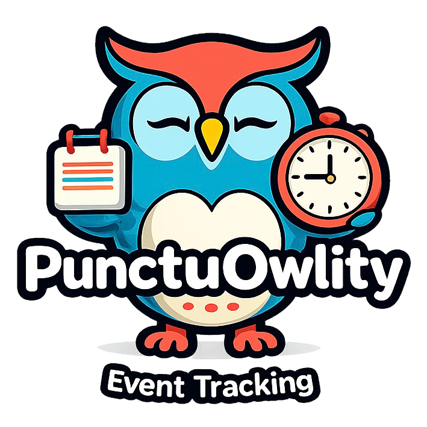

Product direction
The Early Decisions Behind PunctuOwlity
How I narrowed the feature set, chose the event grid, and defined an everyday alternative to complex calendar tools.
Why I chose event tracking
I chose the event-tracking concept because it was practical and manageable. Appointments, deadlines, and personal reminders are common needs, and I wanted an app that made those commitments easy to add, remove, and review at a glance.
The central design rule was simplicity. The experience should not force people through extra features just to check a date or save a reminder.
The five capabilities I prioritized
My first feature outline called for account login and creation, a main grid of upcoming events, adding and removing records from a database, event details such as time and description, and a notification on the day of an event.
The grid was important to me from the beginning. I wanted a compact overview that could surface several upcoming commitments without turning the main screen into a dense calendar.
How I positioned the product
Google Calendar is useful for work meetings, shared schedules, and integrations. Eventbrite is built around ticketed events and public gatherings. My product concept was different: straightforward personal tracking without advanced scheduling tools or event-discovery features.
That comparison helped me decide what not to build. Removing complexity was a product choice, not simply a missing feature.